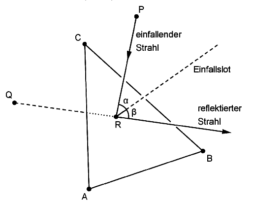

The triangle¶
Problem
In a cartesian coordinate system, a triangle \(ABC\) located in the plane \(E: x_1+x_2+x_3=4\) is defined by the points \(A(4|0|0)\), \(B(0|4|0)\), and \(C(0|0|4)\).
Determine the area of the triangle \(ABC\).
The triangle \(ABC\) is exemplary for a mirror. Within the model, the point \(P(2|2|3)\) indicates the position of a light source emitting a beam of light, and the direction of this light beam is described by the vector
Specify the equation of a straight line \(g\) along which the light beam propagates in the model. Determine the coordinates of the point \(R\) in which \(g\) intersects the plane \(E\) and establish that the light beam impinges on the triangular mirror.
(check: \(R(1{,}5|1{,}5|1)\) )
The incoming light beam (einfallender Strahl) is reflected in the point of the mirror represented within the model by point \(R\). For an observer, the reflected light beam (reflektierter Strahl) seems to originate from a position described within the model by point \(Q(0|0|1)\) (cf. figure).
Demonstrate that the points \(P\) and \(Q\) are symmetric with respect to the plane \(E\).
The normal on plane \(E\) in point \(R\) is referred to as axis of indicence (Einfallslot).
The two straight lines along which the incoming and the reflected light beams propagate within the model are located in the plane \(F\). Determine an equation for \(F\) in Hessian normal form. Demonstrate that the axis of incidence is also situated in the plane \(F\).
(possible partial result: \(F : x_1-x_2=0\) )
Demonstrate that the magnitudes of the angles \(\beta\) between the reflected light beam and the axis of incidence and \(\alpha\) between the incoming light beam and the axis of incidence agree.
Solution of part a
In order to determine the area of the triangle, we first need to determine the connecting vectors \(\vec{AB}\) and \(\vec{AC}\):
Now, we can determine the area of the triangle by means of the cross product:
We check the result by means of Sage:
Furthermore, we graphically represent the triangle by means of Sage:
Solution of part b
The straight line must go through point \(P\) and run along the vector \(\vec{v}\). The representation of the straight line is then obtained as
In order to obtain the point of intersection \(R\), we insert the coordinates of the straight line into the equation of the plane:
The point of intersection is then obtained as
We check this point of intersection by means of Sage
and insert the straight line into the graphics of part a). As we can see, the straight line hits the triangular mirror. This can also be deduced from the fact that all coordinates of the point of intersection are positive.
Solution of part c
We first consider the connecting vector \(\vec{PQ}\):
From the equation of the plane \(E\), it is straightforward to deduce that a non-normalized normal vector of \(E\) is given by
This vector obviously is parallel to the connecting vector \(\vec{PQ}\). The points \(P\) and \(Q\) thus lie on the same normal of \(E\). For the two points to be symmetric with respect to \(E\), they need to have the same distance to the plane. We verify this by inserting the midpoint of the connecting line into the equation of the plane:
The points are thus symmetric with respect to the plane.
We add the connection between the points \(P\) and \(Q\) as well as the reflected light beam to our sketch:
Solution of part d
We consider the two straight lines
and
Together with the common point of intersection \(R\), the equation of the plane is easily obtained as
This equation of the plane can be expressed in terms of the coordinates \(x_1\) and \(x_2\):
The axis of incidence normal to the plane \(E\) and going through point \(R\) can be represented as
Obviously, the coordinates \(x_1\) and \(x_2\) of \(e\) satisfy the equation of the plane \(F\) so that \(e\) lies in \(F\).
We add the plane \(F\) and the axis of incidence \(e\) to our drawing:
Solution of part e
The angles \(\alpha\) and \(\beta\) are easily calculated by means of a scalar product:
and analogously:
The angles \(\alpha\) and \(\beta\) thus have the same magnitude which is also confirmed by our sketch and by explicit evaluation with the help of Sage.